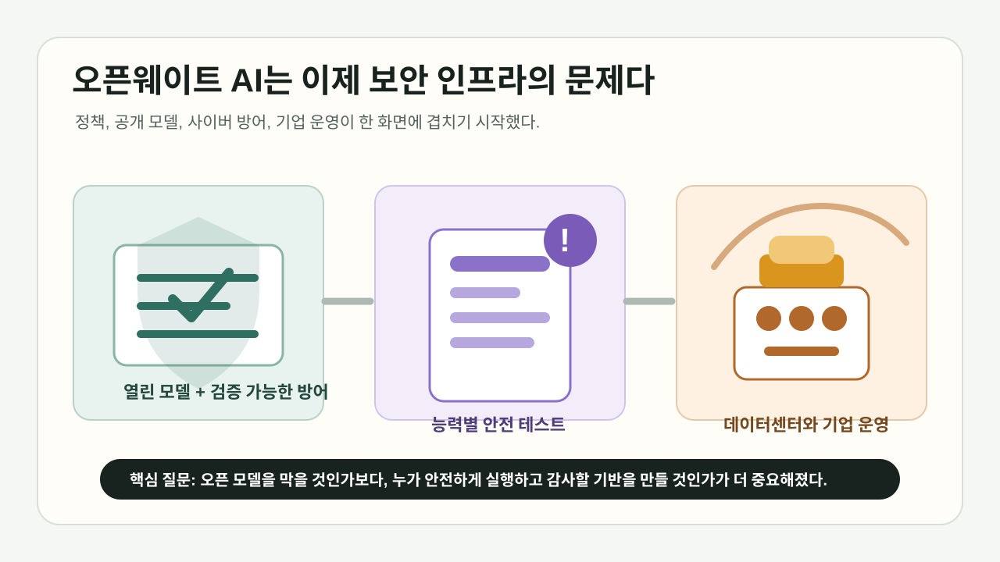
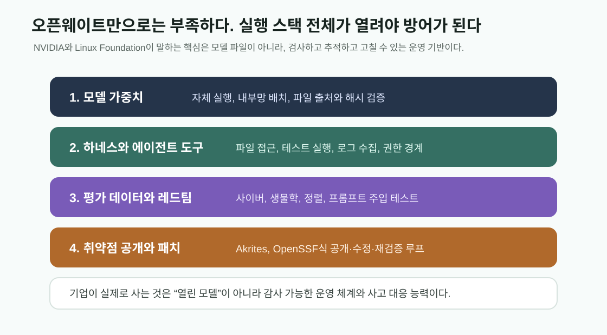
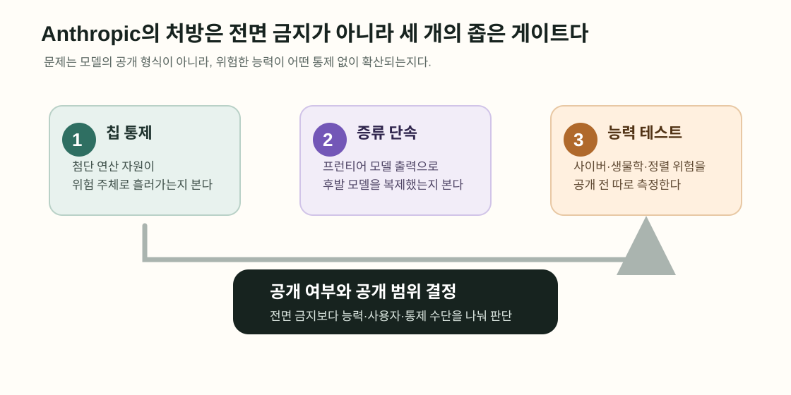
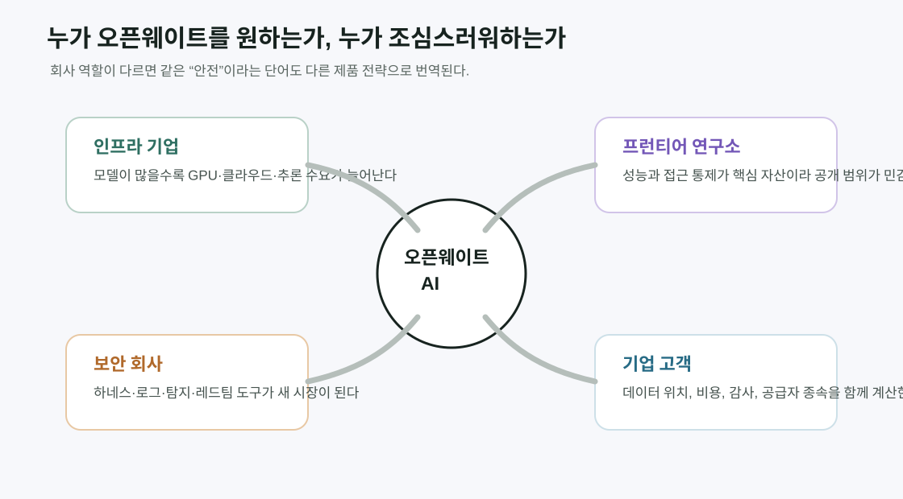
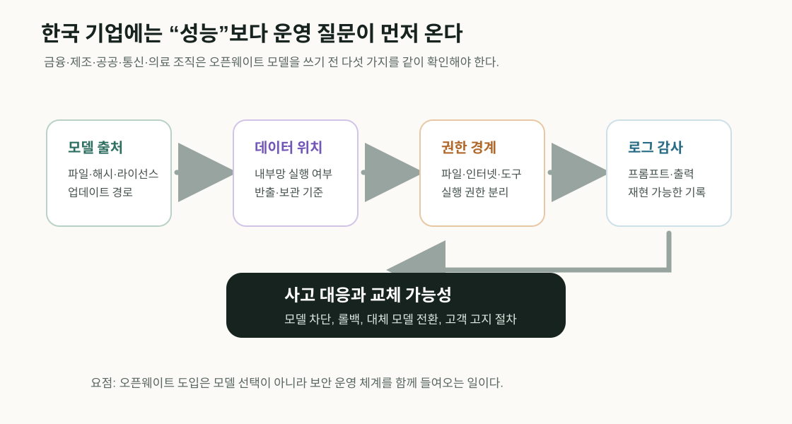

오픈웨이트 AI, 금지 대신 안전 인프라 전쟁이 됐다
7월 27일 미국 AI 업계의 논쟁은 “중국 오픈웨이트 모델을 막을 것인가”에서 “누가 안전한 오픈 AI 인프라를 장악할 것인가”로 이동했다. Anthropic은 오픈웨이트 모델 금지를 주장한 적이 없다고 선을 그었고, NVIDIA는 Microsoft, Hugging Face, Linux Foundation 등과 함께 Open Secure AI Alliance를 내세웠다.

Open Weight Fault Line
같은 날 나온 두 메시지가 산업의 균열을 보여 줬다
오픈웨이트 모델은 더 이상 개발자 커뮤니티의 배포 방식만을 뜻하지 않는다. 미국의 AI 주도권, 중국 모델 확산, 사이버 방어, 생물학 위험, 클라우드 비용, 기업 고객의 공급자 종속까지 한꺼번에 걸린 정책 의제가 됐다.
Anthropic CEO Dario Amodei는 7월 27일 공식 글에서 “Anthropic은 오픈웨이트 모델 금지를 주장한 적이 없다”고 밝혔다. 그는 위험한 능력을 갖지 않은 오픈웨이트 모델은 기업, 개발자, 연구자에게 공공재가 될 수 있다고 썼다. 최근 일부 미국 당국자가 중국 오픈웨이트 모델 사용 제한을 검토한다는 보도가 나오고, 업계가 오픈 모델 지지 서한에 잇따라 이름을 올리자 직접 입장을 정리한 것이다.
같은 날 NVIDIA는 Open Secure AI Alliance 출범을 발표했다. 이 연합은 AI 에이전트와 소프트웨어 보안을 위한 개방형 도구, 기술, 평가 방법을 만들겠다고 밝혔다. 창립 파트너 명단에는 Microsoft, IBM, Cisco, Cloudflare, CrowdStrike, Dell Technologies, Hugging Face, Linux Foundation, NAVER, SK Telecom, Palantir, Red Hat, Salesforce, SAP, ServiceNow 등 클라우드, 보안, 기업 소프트웨어, 오픈소스 생태계의 이름이 길게 들어갔다.
두 발표는 같은 방향을 말하는 것처럼 보이지만 실제로는 다른 긴장을 드러낸다. NVIDIA와 여러 인프라 기업은 오픈 모델과 오픈 하네스가 방어자에게 필요하다고 주장한다. Anthropic은 오픈 모델 금지에는 반대하지만, 충분히 강한 모델은 공개 여부와 무관하게 사전 안전 테스트를 받아야 한다고 본다. 논쟁의 축은 “오픈이냐 폐쇄냐”보다 “어떤 능력을 누구에게, 어떤 검증 뒤에 열 것인가”에 가까워졌다.
배경에는 중국 모델의 부상이 있다. Moonshot AI의 Kimi K3, Z.ai의 GLM 계열, DeepSeek 이후의 오픈웨이트 전략은 미국 폐쇄형 모델 사업자에게 가격과 배포 방식의 압박을 주고 있다. 성능 주장을 어디까지 믿을지는 별개지만, 미국 개발자와 기업이 중국 모델을 실제 대안으로 검토하기 시작했다는 점은 정책 논쟁을 빠르게 키웠다.
오픈웨이트 지지 진영의 첫 번째 논리는 접근성이다. Open Weights and American AI Leadership 서한은 기업, 대학, 공공기관, 스타트업이 매번 프런티어 모델 가격을 지불하지 않고도 고급 AI를 조정해 쓸 수 있어야 한다고 주장한다. 모델을 내려받아 자체 인프라에서 검사하고 수정하고 실행할 수 있으면 고객은 단일 공급자에 덜 묶이고, 각 산업에 맞는 특화 모델을 만들 수 있다는 설명이다.
두 번째 논리는 경쟁이다. 서한은 오픈웨이트 모델이 모델 개발사뿐 아니라 클라우드, 칩, 애플리케이션, 서비스 전반의 경쟁을 키운다고 본다. 이 관점에서 폐쇄형 프런티어 모델만 시장을 지배하면 AI의 이익이 소수 기업에 집중되고, 미국 전체 산업으로 확산되는 속도도 늦어진다.
세 번째 논리는 보안이다. NVIDIA와 Linux Foundation은 오픈소스 소프트웨어가 금융, 제조, 통신, 정부 시스템의 기반이 됐듯이 AI 보안에서도 관찰 가능하고 수정 가능한 도구가 필요하다고 말한다. Linux Foundation은 Open Secure AI Alliance 참여와 함께 NVIDIA의 NOOA 프레임워크, Akrites, OpenSSF 작업을 언급하며 AI 에이전트를 테스트하고 추적하고 감사하는 개방형 기반을 강조했다.
이 주장이 힘을 얻은 이유는 최근 AI 에이전트 보안 사고 논란이다. 폐쇄형 모델은 악용 방지 장치 때문에 실제 침해 조사에서 필요한 요청까지 거부할 수 있고, 기업은 모델 내부와 정책을 충분히 들여다볼 수 없다는 비판을 받는다. 반대로 오픈 모델은 기업 내부망에서 직접 실행하고 로그, 하네스, 탐지 규칙을 맞춤화할 수 있어 대응 속도가 빠르다는 주장이 나온다.

하지만 Anthropic은 이 낙관을 그대로 받아들이지 않는다. Amodei는 오픈웨이트 모델이 경쟁과 접근성을 넓히는 장점은 인정하면서도, 공개된 가중치는 일단 퍼지면 회수할 수 없고 guardrail을 제거한 복제본이 사적 인프라에서 돌아갈 수 있다고 지적한다. 특히 사이버와 생물학 위험이 충분히 강해진 모델에서는 공격자가 방어자보다 더 빨리 이익을 얻을 수 있다고 본다.
그래서 Anthropic이 제시한 처방은 금지가 아니라 세 가지 좁은 개입이다. 첫째, 강력한 칩과 첨단 제조 장비가 중국 같은 권위주의 국가로 흘러가는 것을 더 강하게 막아야 한다. 둘째, 대규모 증류 작업, 즉 더 강한 모델의 출력을 이용해 후발 모델을 빠르게 끌어올리는 관행을 단속해야 한다. 셋째, 공개형과 폐쇄형을 가리지 않고 충분히 강력한 모델은 사이버, 생물학, 정렬 위험에 대해 의무 안전 테스트를 받아야 한다.

이 입장은 오픈웨이트 지지 서한과 일부 겹치고 일부 충돌한다. 서한도 불법적인 가치 추출은 표적화된 법적·상업적 틀로 다뤄야 한다고 말한다. 하지만 서한은 오픈 모델이 안전 도구가 될 수 있다고 더 강하게 주장하고, Anthropic은 그런 결론을 사전에 정하지 말고 테스트로 확인해야 한다고 본다.
| 쟁점 | 오픈웨이트 지지 논리 | Anthropic이 강조한 한계 |
|---|---|---|
| 접근성 | 기업과 연구자가 고급 모델을 직접 실행하고 조정할 수 있다. | 능력이 강한 모델은 악용자도 같은 접근성을 얻는다. |
| 보안 | 방어자는 모델과 하네스를 검사하고 내부망에서 맞춤 대응할 수 있다. | 공개된 가중치는 회수할 수 없고 안전장치 제거가 쉽다. |
| 정책 | 넓은 금지는 경쟁을 막고 중국에 생태계 주도권을 넘길 수 있다. | 칩, 증류, 능력별 테스트 같은 좁은 통제는 필요하다. |
여기에 기업별 사업 모델 차이도 겹친다. NVIDIA는 더 많은 모델과 더 많은 추론 수요가 생길수록 GPU, 네트워크, 소프트웨어 스택의 가치가 커진다. Microsoft와 클라우드 기업은 고객이 여러 모델을 섞어 쓰는 환경에서 보안, 거버넌스, 오케스트레이션을 팔 수 있다. 반면 폐쇄형 프런티어 연구소는 모델 성능과 접근 통제 자체가 핵심 자산이다.
그래서 Open Secure AI Alliance 명단은 단순한 협업 명단보다 산업 지도를 보여 준다. 보안 회사, 클라우드 회사, 오픈소스 재단, 기업 소프트웨어 회사, 통신사, AI 스타트업은 오픈 도구가 많아질수록 자신들의 제품을 붙일 수 있다. 반대로 OpenAI, Google, Anthropic 같은 최상위 모델 연구소는 공개 가중치의 장점과 위험을 모두 계산해야 한다.

Axios는 Anthropic이 업계 오픈웨이트 지지 움직임에서 가장 눈에 띄는 유보자로 떠올랐다고 정리했다. 보도에 따르면 Google과 OpenAI는 처음에는 빠져 있다가 공개 서한에 참여했고, Anthropic은 여전히 이름을 올리지 않았다. Amodei의 글은 이 공백을 “사업 보호를 위한 금지론”으로 읽는 비판에 대응한 성격이 강하다.
The Verge는 NVIDIA, Microsoft, IBM, SpaceXAI, Palantir 등 여러 기업이 오픈 AI 보안 연합을 만들었지만 OpenAI, Google, Anthropic은 빠졌다고 보도했다. 이 부재는 오픈 모델 논쟁이 단순한 찬반이 아니라 “어떤 역할을 하는 회사가 어떤 위험을 더 크게 보는가”의 문제임을 드러낸다.
중국 모델을 둘러싼 긴장도 이 논쟁을 밀어붙인다. 미국이 중국 오픈웨이트 모델 사용을 제한하면, 단기적으로는 미국 폐쇄형 모델 업체에 유리할 수 있다. 하지만 미국 개발자와 스타트업이 더 싼 모델 실험을 하지 못하게 만들고, 오픈 생태계의 중심이 미국 밖으로 이동할 수 있다는 반론도 만만치 않다.
반대로 아무 제한도 없다면 다른 위험이 생긴다. 고성능 모델이 생물학 설계, 취약점 자동화, 피싱, 공급망 공격에 쓰일 수 있고, 한번 공개된 가중치는 특정 서비스처럼 계정 정지나 API 차단으로 통제하기 어렵다. “오픈 모델은 민주적이므로 안전하다”는 주장도, “오픈 모델은 위험하므로 막아야 한다”는 주장도 모두 현실을 단순화한다.
한국 기업과 개발자에게 이 논쟁은 먼 얘기가 아니다. 앞으로 AI 조달과 보안 심사에서 모델 가중치를 어디에 두는지, 로그가 어디에 남는지, 특정 모델이 어떤 안전 평가를 통과했는지, 중국 또는 미국 모델을 쓸 때 법적 리스크가 무엇인지 묻는 질문이 늘어날 가능성이 높다.
특히 금융, 제조, 공공, 통신, 의료처럼 내부 데이터와 보안 규제가 강한 산업은 오픈웨이트 모델의 매력을 크게 느낄 수 있다. 자체 인프라에서 실행하면 데이터 반출을 줄이고 비용을 예측하기 쉽다. 그러나 보안팀은 모델 파일 출처, 해시 검증, 의존 패키지, 추론 서버 권한, 프롬프트와 출력 로그 보관, 취약점 대응 절차를 함께 관리해야 한다.

스타트업에는 또 다른 질문이 붙는다. 오픈웨이트 모델이 강해지면 초기 제품 비용은 낮아질 수 있지만, 대형 클라우드와 인프라 기업이 오픈 모델 운영 스택을 장악하면 새로운 종속이 생긴다. API 종속에서 벗어났다고 생각했는데, 실제로는 특정 GPU 클러스터, 추론 엔진, 보안 하네스, 모델 호스팅 플랫폼에 묶일 수 있다.
앞으로 확인할 지표는 분명하다. 첫째, Open Secure AI Alliance가 실제 오픈소스 도구와 평가 데이터셋을 얼마나 빨리 공개하는지 봐야 한다. 둘째, Anthropic이 요구한 능력별 안전 테스트가 미국 정부나 국제기구의 표준으로 이동하는지 봐야 한다. 셋째, 중국 오픈 모델에 대한 제재 또는 사용 제한이 실제로 나오면 미국 기업과 개발자가 어떻게 우회하거나 적응하는지 봐야 한다.
내 결론은 이렇다. 오픈웨이트 AI의 다음 국면은 “모델을 공짜로 내려받을 수 있다”가 아니다. 그것을 안전하게 실행하고, 검사하고, 사고가 나면 대응하고, 국가 간 경쟁 속에서도 기업이 쓸 수 있는 제도와 도구를 누가 만들 것인가의 싸움이다.
NVIDIA의 연합과 Anthropic의 입장문은 서로 반대편의 선언처럼 보이지만, 둘 다 같은 사실을 인정한다. 프런티어급 AI는 이제 폐쇄형 API 안에만 머물지 않는다. 오픈웨이트 모델이 경제와 보안의 실제 인프라가 될수록, 안전은 회사의 약관이 아니라 생태계의 운영 체계로 다뤄져야 한다.
출처와 더 읽을 자료
- Anthropic: Our position on open-weights models
- NVIDIA Blog: Industry Leaders Unite in Open Secure AI Alliance for AI Safety and Security
- Linux Foundation: Open Models and Open Weights Are Foundational to Secure AI
- Open Weights and American AI Leadership public letter
- Axios: Anthropic CEO Dario Amodei says he does not support open-weight AI ban
- The Verge: Nvidia, Microsoft launch open AI security alliance
- The Verge: Why China is giving away its best AI models
- UK AI Security Institute: How far behind the frontier are leading open weight models on cyber?